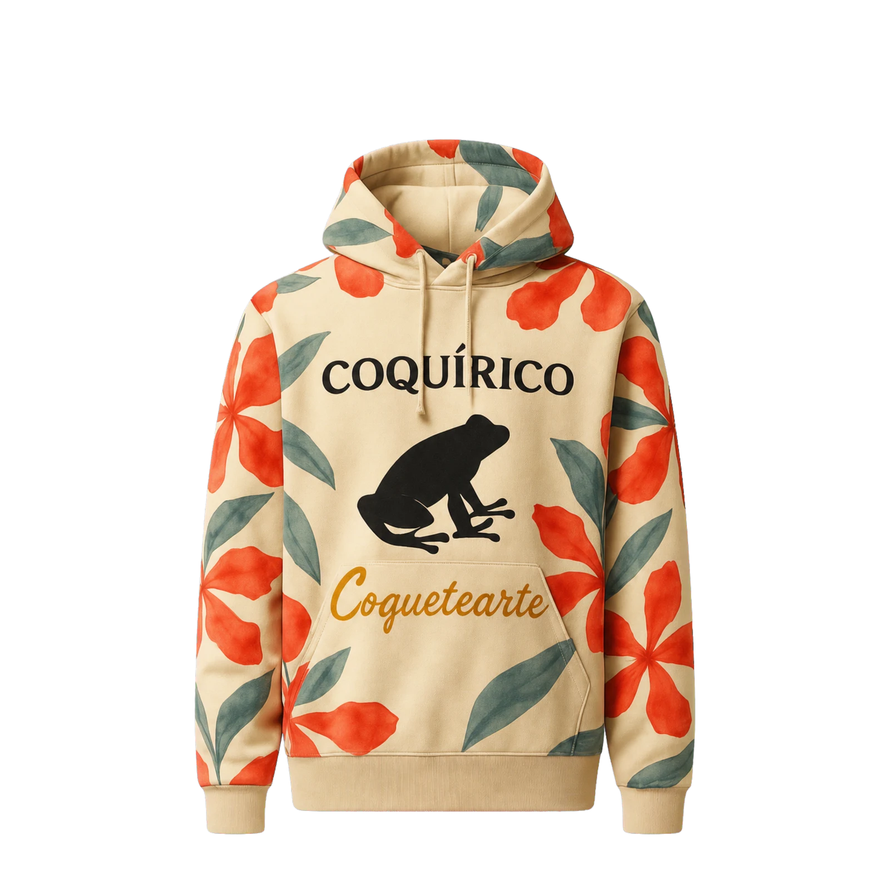

02 / The Island
The story breathes — the can steps aside, and the island itself takes the screen.
Born of El Yunque
The coquí calls at dusk — the sound the island is named for.
Puerto Rican style coconut drink
The rainforest exhales — warm wet air, the hush of leaves, and the first coqui calling into the dark.
Coquetearte — a light and refreshing Coquito-style cooler, crafted with 100% natural coconut water, a touch of coconut milk, and a sprinkle of cinnamon.
Non-alcoholic · 60 calories · 8 fl oz / 240 ml
04 / After Dark
The coqui’s song settles into rhythm — and the can is the beginning, not the boundary.
Drag to turn · tap a can — then scroll to enter its world ↓
Tap the night — a coquí answers from where you touch
02 / The Island
The story breathes — the can steps aside, and the island itself takes the screen.
The coquí calls at dusk — the sound the island is named for.
03 / The Pour
Cool coconut breaks over ice, and a thread of cinnamon lifts to meet the vanilla.
Coconut water · coconut milk · cane sugar · agave syrup · natural flavors · cinnamon · vanilla extract.
Move your cursor — stir the pourDrag the pour — it stirs where you touch
05 / Isla Drop 01
Concept drop · presentation only
